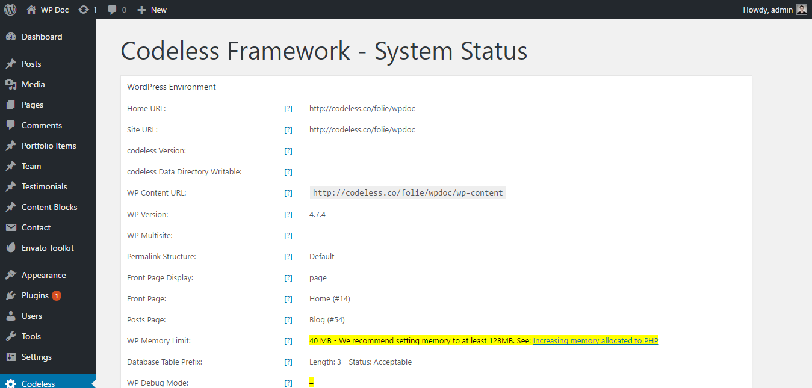
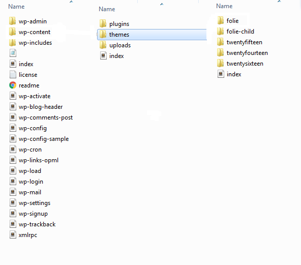

Documentation
Welcome to Folie Documentation. Here you will find the all the useful detailed instructions to use Folie theme.
Welcome to Folie Documentation. Here you will find the all the useful detailed instructions to use Folie theme.
Hey there! We are very pleased that you have chosen Folie for your website, you will not be disappointed! Before you get started, please be sure to always search our Documentation and Knowledge base, and also watch our Video Tutorials. We provide you with all the details you need to use Folie. It can only be used with WordPress and we assume that you already have WordPress installed and ready to go. If you do not, please follow this link to see our section on WordPress to help you get started.
Thanks, and enjoy!
To install this theme you must have a working version of WordPress already installed. If you need help installing WordPress, follow the instructions in WordPress Codex. Below are all the useful links for WordPress information.
To use Folie, please make sure you are running WordPress 4.7 or higher, PHP 5.6 or higher, and MySQL 5.6 or higher (for legacy environments also PHP versions 5.3.x will work but it is recommended to be on at least PHP 5.6 and preferably PHP 7.0. WordPress recommends PHP 7). We have tested it with Mac, Windows and Linux. Below is a list of items you should ensure your host can comply with.
To check your system status please go to Codeless -> System Status on the manin WP menu.
Many issues that you may run into such as; white screen, demo content fails when importing and other similar issues are all related to low PHP configuration limits. The solution is to increase the PHP limits. You can do this on your own, or contact your web host and ask them to increase those limits to a minimum as follows:
When you purchase our theme from ThemeForest, you can download the Folie files via the 'Downloads' tab on your ThemeForest account. When you download Folie, you have 2 options, either download All Files & Documentation or the Installable WordPress File Only. The former includes the theme files and supporting documents, while the latter only includes the theme's installable WordPress file. The latter is recommended when you're only looking to update/install the theme manually. Aside from the digital files you get when you purchase the theme, you also obtain exclusive services that will help you as you use the theme. Below is a full list of everything that is included when you purchase the theme and download all the included files.
All of our items come with 6 months of included support and free lifetime updates for your theme. After the 6 months period, you have the opportunity to extend support coverage up to 6 or 12 months further. If you choose to not extend your support, you will still be able to submit bug reports via email or item comments and still have access to our online documentation knowledge base and video tutorials. Envato clarifies item support here http://themeforest.net/page/item_support_policy We have an open forum system to answer the question. Support is limited to questions regarding the theme’s features or problems with the theme. We are not able to provide support for code customizations or third-party plugins. If you need help with anything other than minor customizations of your theme, we suggest enlisting the help of a developer.
On September 1st, 2015, Envato changed their terms and conditions for item support and introduced paid item support for Themeforest and CodeCanyon. When you purchase a theme, you will be granted an inclusive 6 months period of support for that item. When this expires you can choose to extend your item support for a further 6/12 months at a fee. Please continue reading below to learn more about item support, or click to read Envato's 'What Is Item Support?' article.
You are eligible to renew or extend your support subscription if you have less than 6 months support remaining and the author is still supporting the item. The cost of purchasing support can vary according to the different periods of your subscription. For example, extending your support subscription while it's still active costs less than renewing it when it has expired. To learn more about this, please read Envato's 'Extending and Renewing Item Support' article found here.
In this case you will not be granted access to hands on support. You will however continue to receive theme updates that contain bug fixes, new features and access to our online documentation, help files, video tutorials and the community forum.
There are 3 scenarios for when you can extend or renew item support; At the time of purchase, during your support period, and after your item support has expired.
You can access the support site and blog wheneever you want. The links are incoorporated inside theme options. Just go to Codeless > Home. Click on the Folie Series button to go to the blog page. Click on the Support button to go to the support site.
When purchasing Folie from ThemeForest, you have two licensing options. The Regular License, and the Extended License. The billing, licensing terms and process is purely handled by Envato (the company who owns ThemeForest), and we have no control over these aspects. To learn more about what each License is for and which one to purchase, continue reading below.
License Information Purchase another licenseYou can install the theme in two ways: through WordPress, or via FTP.
The Folie.zip file is the Installable WordPress Theme and what you need to use to get the theme installed. There are two ways to install Folie, via WordPress or via FTP. First, you need to download the Folie files from your ThemeForest account. Navigate to your downloads tab on ThemeForest and find Folie. Click the download button to see the two options; The Main Files and the Installable WordPress Theme. See below:
theme/
├── Folie
├── Folie-child-theme
├── Documentation
├── License
└── Slider-dummy-data
There are two ways you can install the Folie theme. You can choose to install it via WordPress, which is what will be outlined in this article, or via FTP. Before you can install Folie, you need download the necessary theme files from your ThemeForest account. Continue reading below for more information.
Installable WordPress file only, which is just the WordPress installable file, or choose to download All Files & Documentation which is the full Folie theme package.
If you get the "Are You Sure You Want To Do This" message when installing folie.zip file via WordPress, it means you have an upload file size limit that is set by your host. If this happens, please install the theme via FTP or contact your hosting company and ask them to increase the limit.
Step 1 – Login to your ThemeForest account and navigate to your 'Downloads' tab and then locate your Folie theme purchase.
Step 2 – Click the 'Download' button and choose to either download the 'Installable WordPress file only', which is just the WordPress installable file, or choose to download 'All Files & Documentation' which is the full Folie theme package.
Step 3 – For instructions on how to install the theme via WordPress, click here
Step 1 – Log into your server installation via FTP. You can use software such as Filezilla for this.
Step 2 – If you have downloaded the Full Theme Package from ThemeForest, please unzip the master folie.zip file and then select only the Folie folder.
Step 3 – Upload the extracted Folie folder to the wp-content > themes folder on the server. Make sure the folder name is -> Folie.

Step 4 – Log in to your WordPress Dashboard and navigate to Appearance > Themes and clicking the ‘Activate’ button, for the Folie theme.
There are three ways to update your theme. Before you update, it is best practice to always check our update notes. Also we strongly recommend you to make a backup of your previous theme folder. See the information below for more.
Before you update, it's best practice to always check our Important Update Information article which is updated for each new version, and to make a full backup of your theme folder, files and entire database. If you update via FTP, it's important that you delete (not replace) the old Folie theme folder, Codeless Builder and Core plugin folders. They need deleted because if you only replace the folders, then old files can be left on the server and can cause issues. When you update via WordPress admin, these folders are automatically deleted.
These two plugins are created both by Envato and server the same purpose. They help you take track of the available updates of theme and all the plugins you have purchased from Envato. You can update them by one click. The later one is a follow up of the first plugin and will also replace Envato Toolkit in a near future. So we strongly suggest to install Envato Market plugin.
Step 1 – Go to Envato Toolkit plugin option panel:To use the Envato Market plugin, follow this tutorial.
We strongly recommend to make sure that you have a current backup of your web site, including your wp-content folder, your wp-config.php file, and your .htaccess file in your WordPress installation folder, and a copy of your WordPress database. You can use these to revert back to your original site if anything unexpected happens during the update process. If you are not familiar with the backup process and can not do this yourself, there are several plugins available that completely automate that process for you, such as: UpDraft Plus and WordPress Backup Buddy. If you are using the Revolution Slider and have added custom css, please make a backup of the styles because those will be removed when you update. You can also backup your Folie Theme Options on the Backup tab in Appearance > Theme Options > Backup.
You should completely remove all previous Folie theme folders before adding the new updated theme folder, or you could end up with WP path issues, etc.
If you rename your theme folder when you update, then the path is no longer valid. WordPress stores menus and widget settings and some other settings by folder path. You need to rename your theme folder back to what it was before, and your settings, menus, widgets will be restored. Make a copy of your current theme folder before you upload the new theme.
It is always recommended to reset all caching systems after an update, including theme cache, your browser, plugin (e.g. W3 Total Cache), and server cache. Visual issues may happen and more often than not, its caused by caches, and they need to be emptied. Each browser allows you to remove cookies, history and other data. If your theme version is not updated after uploading the new files, it is due to a server-side caching system. Some hosting providers have server-side cache systems installed to optimize the speed of content delivery, please clear any server-side cache or ask your host to do it. This is also true for google pagespeed setups or cloudflare setups. View our general cache information that describes the various forms of cache and how to clear them.
If you have copied template files from parent theme to child theme. Please make sure to revert to parent theme first to confirm if the issue exists there too. If it doesn’t, please update the templates copied to child theme with the parent theme.
When you update the theme, you will see a notification message in your admin telling you the required and recommended plugins need to be updated. Follow the onscreen prompts to install the plugin updates. Our Codeless Builder plugin is the only required plugin and it has to be installed and activated for theme features to work. Make sure you are always using the most recent version of the Codeless Builder plugin (this will not be an issue if you keep theme up to date). It will be installed automatically upon installing or updating your theme. If you dismiss the prompt or do not see it, then you can go to Appearance > Install Plugins page and install the plugin that way. Every time you update the theme, the plugin also will be updated.
For all the included plugins, Visual Composer too, we have purchased a Extended License that let us to bundle the plugins with the theme. This means they can be used by any one purchasing our theme as long as they use the version included in theme folder. You don't need to purchase any other license the plugins are included in the theme. But you can not update it on your own terms with this type of license. The rules of the marketplace do not allow us to give the plugin activation code but you can use the existing version without any problem. We update frequently all theme plugins to their latest versions in every theme release or in case when an urgent update is needed. So they are always fully compatible with the current theme version. If you want to buy a license by yourself this is allowed. You have to buy a new single license but we thought that this isn't needed because the version included works perfectly. You are free to make the choice that best fits your needs.
This is one of the most important features like importing demo template for you to work on it instead of starting th esite from scratch. Folie comes with a handful of build-in demo's. Just choose the one that is more suitable for your site and in a few click it'll be all done! .
The automatic setup wizard will help you configure your new website. The importer will upload for you all pages and posts, some sample sliders, widgets, Theme Options and more. This is recommended to do on fresh installs. It will not replace content like posts, pages, portfolio, etc. and it will not delete current menus or sliders. It will, however, configure and use the selected demo menus, add sliders and replace Theme Options, Reading Settings and Widget Settings.
Step 1 - Go to your Codeless > Home and scroll down to the "Setup Wizard" section. Click on "Setup Now".The child theme is a copy of theme that inherits all Folie options and styling. Here you can customize the default styles and options to your wish. All you have to do is install child theme and activate it. After this you can edit out child theme files to your wish. Since this is independent from the parent theme, all the custom changes made to it will not be affected by future theme updates.
But as the name says, it is a child theme. So for it to work properly you MUST have installed the parent theme first. In the paragraph above you learned how to install theme.
Read below the steps to install and use a child theme:
You MUST have installed Folie theme before using a child theme!
Step 1 – The methods to install a theme are the same as the parent theme. You can import it via Wordpress or ftp.
Step 2 – You need to have downloaded the Full Theme Package from ThemeForest, in order to have the child theme folder. Unzip the master Folie.zip file and then select only the folie-child theme folder.
Step 3 – Zip and upload the extracted child theme folder to the Wordpress > Themes > Add New in your Wordpress dashboard. Or leave as it is and upload the folder into your wp-content > themes folder on the server. Make sure the folder name is -> Folie-child.
Step 4 – Log in to your WordPress Dashboard and navigate to Appearance > Themes and click the ‘Activate’ button, for the Folie Child theme.
We present you the new live customizer. Using this new feature you can change and see at the moment all your customization in the site and page, live. Make all the changes you want to pages and save them ONLY after you have finished all the work. To access the customizer go to your Appearance > Customize.
Check out the current active theme in your site.
Set up Responsive Layout, set on Smooth Scroll, add a Favicon, swipe ON Page comments, add a Back to Top button, 404 error message, page transitions, Custom Codes (css and html) and all lightbox options.
Select type of header to use, Header Layout, global header options. Set up logo as image or font. Assign styles for other header elements such as header box layout, background, border, menu etc. Here you can assign a sticky header too and style it. Customize the menu and Top Navigation Area.
Header layout and global header options.
This is the section where you add your site's logo.
In this section you set up custom style for the header area.
Set up the main header row. The segment where menu is located and other header elements.
The additional top bar above the menu.
An additional bar under the menu.
Main color set up for mobile version of main menu and drop down.
In this section you make header position fixed or otherwise known as Sticky.
From bold and interactive footer, to simple and clean one, our builder takes good care for the Footer section too. You can add any widget you want on it and customize the style to fit your requirements.
Switch on if you want to show footer.
Footer FullWidthSwitch on if you want footer content without container.
Footer LayoutUse this option to change layout of footer. Available options are : 1 Column, 2 Columns, 3 Columns, 4 Columns, 6 Columns, 1/4 3/4, 3/4 1/4.
Footer Centered ContentSwitch on to center content of column.
Show CopyrightSwitch On/Off Copyright on website.
Footer Reveal EffectSwitch On/Off to activate reveal footer effect.
Distance between widgetsSet the distance between the widgest in footer.
This box is devided in boxes showing where margin/padding/border will be. Just add values to the prefered section. Like in this example, where padding top and bottom is set up to be 60px. All values should be added with px.
Main Footer Title TypographySet up the typography and style of the title of widgets in footer.
Custom Footer Content TypographyWhen swipped ON, adds typography options to style footer content font.
Outer Border StyleAdd a border at the outer parts of footer. Select the border style from the drop-down list.
Outer Border ColorSet up the border color.
BG ColorChoose footer background color from the color palette.
Second ColorChoose a secondary footer background color from the color palete, in case you wish to create a gradient effect with 2 colors.
Button BG ColorChoose a color from the color palette, for the buttons used in footer.
Widget Title ColorSelect a color for the widgets titles.
Body Font ColorChoose body font color from the color palette.
Link ColorChoose the color for all links used in footer, from the color palette.
Link Hover ColorChoose the on hover color for all links used in footer, from the color palette.
Inner Borders ColorChoose the color for inner borders in footer, from the color palette.
Choose Copyright background color from the color palette.
BG Font ColorSet up Copyright the border color.
Link ColorChoose the color for all links used in Copyright, from the color palette.
Link Hover ColorChoose the on hover color for all links used in Copyright, from the color palette.
Borders ColorChoose the color for inner borders in Copyright, from the color palette.
Content Distance From TopAdd padding-top to Copyright content.
Content Distance From BottomAdd padding-bottom to Copyright content.
The styling section covers most of all theme's styling options. From Primary color used for text, icons and links, current pagination to Heading, Blog, Portfolio, Buttons and much more.
In this section you customize:
In this section you can customize the font style and color for all available headings in the theme.
In this section you style all text available at the blog page.
In this section you style the portfolio font.
In this section you set up buttons font style.
In this section you style the widgets typography.
The general website layout options. This can be overwrite from Blog Layout and from single page/post layouts.
All Blog Styles and options. Select one of the blog styles that you want to use as a default template. Overwrite the default all pages layout option, set a custom layout for blog
Set a title and tag line to present your website.
Configure here all Portfolio Page and single portfolio items options.
In this section you will find a list of all availbale menus. Click on the menu to add, remove and customize menu item's. Scroll below to assign a menu to your site.
This section is responsible for the widgets. Select the area you want to add or remove widgets from and after clicking on it, you will be able to see all of it's current widgets. Customize them to your wish.
Apart from this section, theme has 1 other widget area, but this particular page doesn’t display it. You can navigate to other pages on your site while using the Customizer to view and edit the widgets displayed on those pages.
Similar to your old default Wordpress Static page, this section specifies whither you will be using your post's page as a home page or a static page.
Click on an element on the page on the right side panel of your screen, the options of the element will display in this section of theme options.
For easy access you can select some page options at the right-bottom side of the screen. Click here for more info about page options.
Click any element in header of your site and the options of header will be displayed here. Click here to view all the header options.
List of your current portfolio items. Add new item by clicking on the plus icon or edit out existing items by clicking on them. A new list of options will enfold. So that you can customize each portfolio item differently.
The part of menu settings to add your team profiles and customize them.
Add your customer's testimonials for your awesome work here.
To add a new testimonial, click on the plus icon. Then compose the new testimony using the options in the left sidebar. For more detailed information go to this section of documentation.
Add and edit website posts in this section.
Add and edit website pages in this section.
folie page options are the settings that customize only one page. The page you have opened. To access them just look at the 4 vertical icons at the bottom-right corner of the customizer, when a page is opened in the Customizer.
This is the main section where you can customize a specific page's settings. The changes made here are specific to only the page you have currently open. Not other page in teh site. Change it's title, layout, header type, publishing date or featured image. Save changes by clicking the Save & Publish button at the top-left corner.
A quick access to Customizer > Styling menu. Where all theme styling options are listed.
Add a new blank page template here.
Opens the current page in a new tab. Click here if you have finished customizing your page (or want to check the result so far) and want to give a live look to all recent customizations.
Images are an important part of a website. They make it flattering and eye-catching if presented in the right dimensions and resolution. In this Options Section you can define all image sizes of site. Leave the width and height empty to display the full image. Leave empty the height attribute to disable the crop.
To find the option go to Codeless > Image Sizes.
Image Resizing - Codeless Theme has the ability to create only the needed thumbnails. For ex, if you add a blog featured image, it will not create automatically all image sizes, it will create only the blog featured image size. Disable this feature if you use CDN. If you disable this feature you need to regenerate thumbnails.
Add Custom Size - Here you can add a new id for a custom image size. You can edit width, height after Save. The new size will be shown at Other Section. After setting the new image size you can use it over your web-page.
Blog Entry - Used as default for all blog images.
Blog Entry Small - Used for Blog Grid and Carousels, News, Media, Alternate.
Blog Post - Used for Blog Grid and Carousels, News, Media, Alternate.
Width: Specify the width of the image
Height: Specify the height of the image
Crop Location: Crop is the action where wordpress forcefully resizes the image you upload to the specified dimensions. Select one of the drop down option to specify the position where the crop should start. Leave default of you do not want to crop images.
Portfolio Entry - Used as default for all portfolio grid.
Team Entry - Used as default for all team members.
Use to add additional image sizes to use for other part of the site.
You can select from three different page builders to add content to your site using Folie theme.
Theme's main builder is Codeless Builder. All it's demo's are build with Codeless Builder. However theme is also perfectly compatible with external WP Bakery Visual Composer and the Wordpress build-in Gutenberg Editor.
Welcome to Codeless Builder! New kind of page builder you will change everything in seconds and you will see it live. The Codeless Page builder it is faster like no other builder on the market. You will change everything on the fly. It is intuitive and simple. Codeless Team have used the best Technology inspired by Medium Editor and SquareSpace. For the first time even portfolios, staff, clients, testimonials will be added in real-time. Access any element option, section, background, font, color, border etc by clicking directly on the live site on the right window and set all this options on the left option sidebar. Please read below for information about it's functionalities.
This is the Codeless Builder Welcome page. Useful tip are displayed to help you understand how it works.
Once you've activated Folie's required plugin - Codeless Builder, you can now use the Codeless Builder to build your pages or posts, and even custom post types. To start using it just click Customize on your WP dashboard.
When creating pages or posts with the new Codeless Builder, first you should add row then select the columns into row settings then add elements. Place the pointer at the top left corner of the page below the header and click the light gray circle that is showing up. It will add a new row. Then hover the pointer on the added row and click the column icon at the right top corner of the row. Select the layout you want. Then add elements. See the below screenshots.
Place the pointer at the top-left corner of the page below the header and click the gray circle icon that is showing up. In the list of elements, select to add a new row.
By default the first icon to be active is the 'T' icon. This opens the main row options at the left panel in customizer. The other icons options include:
1 - Click on it to Drag the row and reposition it else where in the page. Release mouse when you have found the right place to put it.
2 - Click to open a list of possible column partition within the row. There are ready samples, but you can set up a custom column partition if you want.
3 - Click to clone the same row into a new identic row.
4 - Click to delete row.
5 - Click to save the row as a Content Block template. So you can reuse it in other pages by adding it in an instant as a Content Block.
Here are the main options available for row:
After adding a row it contains 1 column, to change the column number go to row icon (hover) click the column icon and select the layout you want. To change the column setting click the column icon inside that row. At the left panel will show up the column options.
Here are the main options available for columns:
An element can be added very easy everywhere in page clicking the gray balloon icons that appear hovering the row or columns.
Other elements will be added continuously to the list.
For most of the elements, they have some predefined templates which can be selected clicking in 'list' button beside 'add' button.
The main options of elements are:
Clone - It duplicated the elements.Content blocks are predefined group of element to make the creating of similar pages easier. The content blocks can be added in back-end -> click at Content Block at the main WP menu. After creating it, edit with Customizer and add the elements you want. Save the page. This content block will be displayed at 'content block' tab when adding elements in column.
Ready made content blocks will be added continuously to the list.
Beside the predefined content blocks, Folie has predefined element styles. Click the gray balloon to add an element and click 'List' tab besides the 'Add' tab to select the predefined styles (Not all elements have predefined styles).
One of the most powerful key features of Codeless Builder is the live edit on any content. New kind of page builder you will change everything in seconds and you will see it live. The Codeless Page builder it is faster like no other builder on the market. You will change everything on the fly. It is intuitive and simple.
Click on any content, title, image, icon or even custom post type to edit it instantly in seconds.
Just place the mouse in any text on the page and write, it's that simple.
There are 2 ways to edit portfolio items:
Open the portfolio page, click at a single portfolio item. The single portfolio item options will display at the left side panel in customizer. The changes are implemented live.
Go to Portfolio items at Customizer menu and search the portfolio item you want to edit. In the customizer will be displayed the single portfolio options and the portfolio single item at the right side.
For more info about portfolio and portfolio items please click here.
The same thing works with team. Go to team element, click on edit icon on the team member you want to edit and you will see the options of that team will be loaded at the customizer panel. For more info about team options please click here.
The same thing works also with testimonials. To add a new testimonial click the '+' icon and enter the information at the left panel. To edit a testimonial, go to testimonial element, click on edit icon on a testimonial and you will see the options will be loaded at the customizer panel.
It's very easy to edit an icon, just click at the icon and a list of icons will be displayed. Select one from the list and it will change instantaneously. To find easy an icon you can search it at the search field. For more information please click here.
With Codeless Builder is very easy to edit widgets, go to footer or sidebar area and click the edit blue icons to edit the widgets. The widget options will display at Customizer panel. See the below image:
There's no need to refresh browser and again change tab to adjust element margin or padding. Just press Shift + Ctrl + Click on element and drag your mouse to change padding and margins.
Click on element - to easily access the element's options. Click on any element and the it's options will show us in customizer panel.
Logo Builder is another powerful feature of Codeless Builder. Create the logo instantanly and see the changes live. Drag and drop it everywhere in header. Click the logo edit icon that is displayed when hover the logo. The logo options will be displayed in Customizer.
Logo options:
Logo type - Select the type: font logo or image.The main header options are at Header in the main Customizer menu. Header has it's elements that can be placed anywhere with drag and drop.
To add elements at header, click one of the gray balloons that appear in header area when hovering it. The options of each element will be displayed at Customizer panel when selecting them. The available elements for the header:
Social Icon - Add social link, select the socials you want to display, select fort size, color, border style, display mode, space between icons, icon alignment, line height, margins and paddings.WP Bakery Visual COmposer is one of the most popular builders out there. With thousand of users and countless site's build with it. This was the to-go to plugin before Gutenberg or other custom made builders (such as Codeless Builder). This plugin too, uses blocks and has the logic of drag-and-drop to add content to the page. All you have to do is:
Install plugins > Install WP Bakery plugin. Activate it from the plugins menu.
Backend Editor to open Visual Composer.
Just like Codeless Builder, here you have the possibility to add blocks of content in one click. instead of composing it bit by bit yourself. For this, just open Visual Composer, and switch to the "Content Blocks" tab.
Gutenberg is the project name for the new WordPress block editor, which replaced the WordPress TinyMCE editor as the default WordPress editor in WordPress 5.0.
The old WordPress TinyMCE editor looked differently. Simpler and more intuitive to the eye (most of it due to all wp users being very familiar with it). After the release of Gutenberg, this editor is now called the classic editor:
Now the new WordPress block editor, AKA Gutenberg looks like this:
Gutenberg completely changes the editing experience by moving to a block-based approach to content. All the elements you could add before only by having another builder installed (like WP Bakery or Codeless Builder), now you can add the same way directly from the Gutenberg editor.
Basically, Gutenberg replaces the single edit field of the current WordPress TinyMCE editor with lots of individual “blocks”. The blocks allow you to build more complex designs than those allowed in the old classic WordPress editor. A block can be pretty much anything. For example, you can have blocks for: Normal text; Image Galleries; Video embeds; Buttons; Widgets (the same widgets you use in your sidebar); Tables..Etc. Each block is its own entity that you can manipulate on an individual basis. For example, here’s a quick Gutenberg post that contains three blocks: 2 text blocks 1 image block Watch the easy it can rearrange those blocks just by dragging and dropping them:
Gutenberg is part of Wordpress so you can find all the neccesary and more detailed tutorial in Wordpress.com site. Folow this link for more.
Within Folie WordPress Theme you will get a total of 24 elements and we are going to describe each one of them in this section. We should include also the fact that we'll add other elements from time to time.
There is an easy way to show all the elements : you simply click on the black line below the main menu. But you can also add elements on every section possible, by clicking the icon located on left and right of the rows and columns.
See the image below.
Rows are the base unit on a theme layout. They are the column layouts that can placed inside of sections. Rows can be accessed easily with our builder:
General Settings
These settings show everything about customizing the entire row from layout, columns, attributes, to animations, video (self-hosted, youtube or vimeo) and responsivity.Design Settings
The Design Settings include everything about the paddings and margins between elements and the row, the border style/size and color, text and background color, background image and background overlay.A normal Header has included the menu and the Page Header. No struggles around to add and customize the Page Header : now you can add it as a new element and position it everywhere in the page.
General Settings
Design Settings
Completely customize the text typography, font size, font weight and even including animations in just a few clicks.
Just add a Custom Heading in every section that you want and customize it in a minute.
There are a lot of customizing options for buttons.
Our Builder makes it easy to add images, videos or live photos anywhere on the page. All images support lazy-loading, and come with different animation styles. Media modules can be placed in any column that you create, and their size will be adjusted to fit.
Image Media
Video Media
Add and customize your gallery in no matter of time. Simply choose your photos and start to edit them live.
The divider element is perfect for creating a horizontal line rule and for adding structure and organization to your site.
Services customization is unlimited with our builder. Transform everything from icons, to distances between title and content, including animation effects.
General Settings
Design Settings
Testimonials are a great way to encourage trust from your visitors. With our builder you can easily add and setup a testimonial. There are three ways to add a new testimonial.
The default Wordpress Dashboard > Testimonials > Add New.
Create a testimonial from the Customizer, go to Theme Options > Testimonials and add a new one clicking on the plus icon.
From the element directly. When you have added the testimonial element in the page, click on the plus icon to add a new testimonial.
Now that that the testimonial is created, we are going to add it as a new element, on a page section (you can add a testimonial everywhere you want).
The team element is the same as testimonials. You can add new team members in the same three methods described for the testimonials above. From Wordpress Team > Add New. From the Customizer: go to Theme Options > Team and from the element directly, by clicking on the plus icon.
Portfolios are a must have in your site, even it is a business or a creative one. They represent you. By portfolios the customers are able to create a better version of you.
You can add a portfolio element on every section of your page and customize it endlessly.
They include everything from portfolio layout, to special filters, alignment, space adjustments and animations.
Overlay OptionsThese options include all the items overlay styles, effects and colors.
For more detailed information about all portfolio options, go to Portfolio Options.The Portfolio item options include the item title, slug, status, date, featured image and from here you can also open the Editor and edit the content using shortcodes too.
For more detailed information about portfolio items, go to Portfolio Items.Codeless Slider is theme's build-in slider. Add Codeless Slider as an element and built the slider that you always wanted. This is a slider you build on-the-fly, for every page. The main component of it is the ROW. Basically each slide is a row where you can add any available element of a normal row (text, custom headings, buttons, video, image, background image/video.. etc). add as any slides to one slider as you want. Check below these steps showcased with screenshots.
Row - This row is what contains all the content inside a slide. Click on it to open custom row options, where you can add a background image/video for the slide and set up other settings.Codeless slider - click on it to open the slider's options.Current Slider - click to open the current slide's options.Plus icon at bottom-right - adds a new slide to the slider.The numbers before the plus icon at bottom-right - represend the slide's numbers. Click on one of the numbers to open that slide.Blog can be assigned as the default posts page from the wordpress settings, as you already know. This is one of the first steps to set up a wp site. But blog is also present as a simple element. So you can add the blog element in every page and every section you want. Do not limit the posts display in only one page. Add your posts in other pages too using the "Blog element". You can now customize it in different styles to showcase the articles in the most effective and nice layout you can.
Choose between many blog styles, the grid layout, pagination method, the animation type, add/remove meta data, use an image filter style, set ON Lazyload image style and assing the featured image size.
Carousel SliderSwipe ON to add carousel effect, select the navigation style.
QuerySet up how many portst to show, which posts to show based n a simple and clear query, order the posts to your wish and add margin/padding to the blog box.
For more detailed information about setup options, go to Blog Setup.Clients are an important part to include on a site. Now they come with some extra options.
Clients options include :
Enter an empty space easily on every page section you want.
Empty Space options include :
Counters are a beautiful and helpful element. You can enter a counter on any page section.
Counter options include :
Progress Bars are a great and effective way to show stats to your visitors. Including them on your page will give a more interactive look to it.
Progress Bar options include :
Add a Google Map on every section of page. To display a google map first you should have an API key. Get one right here : Get API Key
Google Maps options include :
Add a Contact Form7 in just two clicks : select a page section to enter it, choose its style and your are done.
Contact Form7 options include :
Toggles are a great way to organize information and improve user experience on your page.
With our builder you can edit the toggles options as a whole and even choose to edit each of them individually. This option let's you choose if you want to make the toggle active by default.
You can also edit the toggle text individually.
Toggles options include :
Lists are another good way to organize information on a page. Include them anywhere you want with our new builder.
With our builder you can edit the list options as a whole and even choose to edit each of them individually. This option let's you choose if you want to choose a custom icon for the list items.
List options include :
Icons are more interactive now. You can add icons on most elements and change them with a simple click on them. A full list of icons will be shown for you and you should only choose.
Icons options include :
Share icons have more options and facilities with the new builder.
Share Icons options include :
Social icons are pretty much similar to the other icon we discussed. Their options are similar too.
Share Icons options include :
Add Revolution Slider as an element and start to edit.
Add Layer Slider as an element everywhere you want and customize it in a few seconds.
The blog page is one of the wordpress most important and basic pages. It show of a list of all your posts. You can now customize it in different styles to showcase the articles in the most effective and nice layout you can.
There are two ways to assign the blog page for your Wordpress installation.
The old fashioned and wordpress default option to assign the post's page. For this, please go to Settings > Reading. Assign a static page for home and the blog page.
Assign the blog page using solely theme options. To access this option follow the track: Appearances > Customize > Static Font Page. Just as in the default wordpress settings, you get to assign here the home page and the blog page.
There are more than 100 options to style and customize your blog page. Scroll down for a detailed specification for each.
Select one of the blog styles that you want to use as a default template. These are the available styles:
Default Style
Enable if you want to make this style boxed with small shadow around each post.
The Animation type controls the way the posts will be loaded into your page when you first open (or refresh) blog page.
Blog Page LayoutAssign a sidebar and it's position for the blog. Available options are: Default, Fullwidth, Left Sidebar, Right SIdebar, Dual Sidebar.
Set the exact blog widthSet a custom width for your blog in fullwidth layout only.
Set Blog AlignAs the title implies, this option gives you the option to change the alignment of the blog posts positioning. Available options are: Left, Center, Right
Blog Posts LayoutChange the layout of blog posts, you can add custom sidebar for posts also. Available options are: Fullwidth, Left Sidebar, Right SIdebar.
Blog Post StyleSelect one of the blog single post styles. These are the available styles:> Classic Style, Modern Style, Custom Style.
Enable Auto ExcerptIf enabled you will see only a small part of content. If disabled all post will show.
Excerpt LengthIf excerpt is enabled. Here you can specify the exact length of the excerpt to show.
Blog Share ButtonsSelect Social share buttons that you want to use on blog page. A list of available share buttons will be listed if you click on the gray field. Click on each social you want to add. All the present socials have the share option available. Some social networks do not offer a share facility so they can not be added here.
Blog Overlay StyleSelect the style of overlay of blog image on hover. Available options are: None, Color Overlay, Zoom and color, Grayscale.
Overlay IconSelect the icon you want to show up on hover of the blog post. Available options are: Plus, Arrow Right, Expand, Image, Lightbox.
Entry Image LinkDisable if you don't want that image linked with post.
Blog Page FilterableWill add a filter to your blog based on the post categories. Available options are: Disabled, Small Square, Fullwidth.
Blog Lazy LoadAnother alternate option to load the posts images in the blog page. The lazy load will load image posts as you keep scrolling down the blog page.
Defines some of the settings of the single blog post.
Single Blog LayoutSelect if to have a sidebar or not in single blog post. Also assign the position of it if you will use a sidebar.
Single Blog StyleSelect the single blog style.
Single Blog AlignSelect the single blog layout.
Single Blog widthSelect the single blog width of main body.
Single Blog Title Margin TopAdd a margin top to title.
Single Blog Title Margin BottomAdd a margin bottom to title.
Single Blog SharesAdd the shares icons.
Single Blog TagAdd tags.
Single Blog Author InfoAdd author info in single post page.
Single Blog Related PostsAdd a section of related posts under the current post.
Single Blog PaginationAdd pagination to next/previous posts.
Will add a bar with additional information for the blog post. Such as post author, date created and categories it belongs to.
Show Author MetaIf enabled will show the author of post right after the featured image.
Show Categories MetaIf enabled will add the categories list of the post, under the featured image.
Show Date MetaIf enabled will add the creation date of the post.
Will add a vertical bar with additional interaction tools for the blog post. Such as social shares, comment count and post likes number.
Show Share ButtonsIf enabled will add the shares icon. Click on it for the full list of available shares for this post.
Show Comments CountIf enabled will add a comment icon displaying the number of comments for the post. If clicked on it you can go to the comment section.
Show Post LikesIf enabled will add the likes icon. Each visitor can 'like' your post by just clicking on this icon. This will also display the amount of likes a post has gathered.
Here is where you specify how do you want the blog pagination method.
Pagination StyleSelect the style of pagination. Available options are: With page numbers, Next/Prev, Load More, Infinite Scroll.
Pagination AlignSpecify the position of the pagination. You can chose from: Left, Right, Center.
Enable Slider PaginationThis option if enabled will add pagination to the slider of posts.
Enable Slider Prev/NextThis option if enabled will add the Next/Prev arrows to your post slider. (It will affect only the gallery posts)
Enable Slider LoopThis option if enabled will set the post slider in a loop.
Enable Slider lazy LoadThis option if enabled will set the slider images into a lazy load. Each image will load by the time they will show up. Not since the page loads.
Blog Slider DirectionSelect the type of styling for the slider images to load. You can chose from: Scroll, Fade, Cube, Coverflow, Flip.
Blog Slider SpeedMove the scale to specify the value of slider speed. If left at 0, it will remove autoplay.
In this block of options you can customize the single blog post slider, if you have used any slider in it.
Enable Slider PaginationIf enabled, it will add the pagination to next/prev slide.
Enable Slider Prev/NextIf enabled, it will add the next/prev pagination.
Enable Slider LoopIf enabled, it will make the slider loop indefinitely.
Enable SliderIf enabled, it will enable lazy load. A form of pagination where the content of the page will load first and the slider image last.
Blog Slider DirectionSelect the animation in which the slides will load.
Blog Slider SpeedAssign the speed in which the slider will scroll the next image.
Portfolio is a kind of that personal space that you want to take care in a special way. It is used to display mainly your works, business or creative ones, but we are going to put something new.
Breaking the rules, our builder lets you add a portfolio as an element on every page section. Even the portfolio items are not the same. They are treated like pages, where you can add any element you want and have your own freedom to built the portfolio you like. There are more than 100 options to style and customize your portfolio page. Scroll down for a detailed specification for each.
When adding a portfolio element to the page, some pre-created item will be shown. You can edit them clicking on the little icon located on right-bottom of each portfolio item.
You can add a new portfolio item at :
Select the portfolio item format. Available options are: Thumbnail, Slider and Video.
The LayoutFirst you need to choose in what format your portfolio will be displayed : Masonry, gGid, Inline. Select the format on portfolio general options. For every format chosen, the layout of Portfolio item can be : Default, Wide or Large.
TitleEnter the title of portfolio item.
StatusSelect the status of the portfolio item. Available options are : Draft, Pending Review, Private, Published, Scheduled.
DateEnter the date according to timezone.
ContentIf you wish you can also edit the content of portfolio item with the Editor. Shortcodes are available too.
Featured ImageSelect the features image of the portfolio item.
Let's add a new portfolio item :
This portfolio item includes a page header, gallery, 2 custom headings and 2 text elements.
Now let's see the Options of the Portfolio as an element. The options are divided into :
Choose the portfolio layout. Available options are : Grid, Masonry, Inline.
StyleChoose the portfolio style. Available options are : Classic, Classic Excerpt, Media and Title, Only Media.
Media and TitleChoose how many columns the portfolio items will be displayed.
Columns (Items) GapDrag to adjust the space between portfolio items.
Image sizeChoose the images size. Available options are : Default, Full, Blog Entry, Blog Post, Portfolio Entry, Team Entry.
Justify GalleryCalling Justified Gallery, the disposition of all the thumbnails is changed to fill all the spaces (justification). Switch on this option if you want to have an elegant and modern justified gallery.
Justify Row HeightDrag to adjust the justify row height.
Justify Item MarginsDrag to adjust the justify items margins.
CarouselSwitch on if you want items to be displayed in carousel.
PaginationChoose how the pagination form will be displayed. Available options are : Page Numbers, Next/Prev, Load More, Infinite.
FiltersChoose the items filter layout. Available options are : Disabled, Small Square, Fullwidth.
FullwidthChoose the filter alignment, Available options are : Left, Right, Center.
Images FilterThis is definitely new! Choose an filter for the portfolio images. This works like instagram : choose a cool filter for the images. Now your portfolio can have it too. Available options are : 1977d, Aden, Brannan, Brooklyn, Clarendon, Earlybird, Gingham, Hudson, Inkwell, Kelvin, Lark, Lo-fi, Maven, Mayfair, Moon, Nashville, Perpetua, Reyes, Rise, Slumber, Stinson, Toaster, Valencia, Walden, Willow, X-Pro.
Image FiltersSwitch On if you want to add a boxed shadow. Works only on Classic and Classic with Excerpt.
AnimationChoose an animation effect.
CategoriesChoose the categories of the items.
Items per pageChoose the number of items per page.
Order ByChoose how do you want your portfolio item to be ordered, Available options are : Post ID, Author, Title, Name, Date, Modified.
OrderChoose the order of items. It can be ascending or descending.
Choose the style of the portfolio items overlay. Available options are : Color Overlay, Zoom and Color, Grayscale Hover, Two Icons.
LayoutPosition of content into the overlay ( icons, title, tags ). Available options are : Center, Icon Top/Content Bottom, Content Top/Icon Bottom.
Show TitleSwitch on if you want to show the title of the portfolio items.
Title StyleIf the title is enabled, choose the style of it. Available options are H1, H2, H3, H4, H5, H6.
Show CategoriesSwitch on if you want to show the categories of the portfolio items on overlay.
Show IconSwitch on if you want to show an icon on overlay.
IconIf Show Icon is enabled you can choose here the style of the icon. Available options are : Plus, Arrow Right, Expand, Lightbox, Lightbox amp; Link.
DistanceDrag to adjust the distance between portfolio overlay and photo corners.
BG ColorChoose the background color of the overlay.
Overlay Bg ColorChoose a gradient as the overlay background. Available options are : Azure Pop, Love Couple, Disco, Limeade, Dania, Shades of Grey, Dusk, Delhi, Sun Horizon, Blood Red, Sherbert, Firewatch, Frost, Mauve, Deep Sea, Solid Vault, Deep Space, Suzy.
Content ColorChoose the content text color between light and dark.
Content AnimationChoose an animation for the content.
To set up your header you need to have first a menu. After the first install, based on the demo you have selected to install, there will already imported a default menu. But supposing these steps did not take place and you have to set up header from scratch, these are the steps to take.
First you will have to create a menu. To do so please go to your admin options panel. Access it from Appearance > Customize. Scroll down to the Menus option.
Go to Add a Menu option and proceed in creating your first menu.
After successfully creating the menu, you will see it listed in the Menus options. Go to Menus > Menu Locations. Select Folie Main Navigation from the dropdown list. Save changes.
After successfully setting up header menu, you can now proceed in styling it. For this, here is the section to check out. Header Layout, global header options. This is the section containing all the necessary options to configure and customize your website header. Check below for a list of all available options functions explained.
For more details go to Header Options menu
Default Header Style
Fullwidth Header Style
Fullwidth Header Style, opened
Centered with Underline Header Style
With button Header Style
Header with Top Navigation
Side Header Style
The mega menu is one of the most used menu styles. It allows you to include a great number of pages in one single menu item and grouping them into columns. To use the Mega Menu with Folie theme, you have to set it up using Wordpress default menu options.
Go to your Appearance > Menus. Select the menu you want to edit, open the menu item that will be used as mega menu column and check the Check if you want to use this item as megamenu option. Proceed in adding other menu items under it to populate the mega menu column.
Example of a Mega menu.
In this section you can edit out your menu.
Edit current items navigation labels and linked pages by clicking on the triangle icon at the right.
-Reorder current items using the Reorder option.
-Add more items by clicking on the Add Items.
-Set current menu as theme's main menu by checking the Folie Main Navigation checkbox.
-
Automatically add new top-level pages to this menu by checking the checkbox in Menu options.
From bold and interactive footer, to simple and clean one, our builder takes good care for the Footer section too. You can add any widget you want on it and customize the style to fit your requirements.
For more details go to Footer Options menu
Sliders are a powerful elements of every website, they are used to display important content to catch the users attention. Folie includes 3 sliders: Revolution Slider, Layer Slider, Fusion Slider. We also include other slider types for pages/posts and carousels. Each slider can be used on any page or post and has its own set of unique options. below are listed the sliders options and the instructions how to use them.
Sliders can be added in any part of the site, as elements. Search them at the list of builder elements. See the below screenshot:
The available options for slider are the same as for any element: Edit slider options, Clone slider, delete slider and drag and drop it anywhere is site.
Except for Codeless Slider which is incorporated in theme, the other sliders (Revolution Slider) dummy data can be imported right after theme activation at Theme Setup. You can import slider dummy data any time manually at Revolution Slider (or Layer Slider) panel options. The slider dummy data filer are included in theme package (the one you download from Themeforest) at "slider_dummy_data" folder.
The Revolution Slider allows you to easily export/import your slides. It's always a good idea to backup your slides so you can easily import them again if you ever need to.
Codeless Slider is one of our important elements and features. The first Slider that can be edited directly live on the page and you can also check how it will look with the rest of the theme.
Please follow the instructions below to create an amazing and simple slider with Codeless Slider.
Step 1Design -> Background Image and upload an image. You will see the image displayed at the left panel of the screen. This is the slider image.
Custom Heading element. Select the options of this element on Customizer panel.
Overwrite the default button style option.
+ button at the right top angle of codeless slider element. You can clone the created slide and change only the text in second slide.
Folie includes the most popular and best seller Slider Revolution Created By ThemePunch. This slider is a beautifully animated slider that is 100% responsive and has some amazing options. Here we have outlined the most important features and instructions but you can find the full slider documentation at the official plugins page.
Revolution Slider Documentation Purchase Plugin For Auto UpdatesIt's very easy to add revolution slider in every part of the page using Visual Builder. You can find it at the list of elements. Revolution Slider element has the same options as all the elements, it can be deleted, cloned, moved with drag and drop anywhere on page.
Folie includes the popular Layer Slider Created By Kreatura. It is slider for creating image galleries, content sliders, and slideshows with must-see effects, even from your WordPress posts and pages. Below we have described how to cerate a slider with Layer Slider and how to add it on page. For more info about Layer Slider please read the Layer Slider documentation.
When you purchase Folie theme (any other theme) that bundles Revolution Slider and Layer Slider you get to use these Sliders with the theme. However, your purchase of Folie does not give you an individual license for the Revolution Slider and Layer Slider to use or download as you wish. Due to license rules, we can only issue new plugin updates when we issue new theme updates. So anytime Folie is updated, the latest plugin for the Revolution Slider and Layer Slider will be included. This is according to the licensing rules enforced by Envato, and is something out of our control and must abide by. We ensure that the included plugin updates don't have any critical bugs, or conflict with our own update.
Due to the license rules, the only way to get automatic plugin updates is to purchase the plugins individually through CodeCanyon. Doing this provides you with a regular license for the plugin and a purchase code that can be used for Automatic Plugin Updates.
When purchasing Folie, you'll be provided with a unique Purchase Code that you can use to receive auto-updates, theme support and demo installation. The purchase code you receive can only be used for the Folie theme, not for the included 3rd party plugins. The 3rd party plugins that come with Folie can still be used and used as the plugin advertises, however since they are bundled with the theme they can only be used on your Folie site, and do not come with their own individual purchase code that allows you to receive premium support/features from the individual plugin author. We provide support for the plugins included in our theme.
You can only register the Layer & Revolution Slider plugins if you have purchased them individually from CodeCanyon. The status of the plugins state that the site is not authorized to receive updates, this is no cause for alarm. Rest assured that these messages can be ignored and that with every new version of Folie we release, we always make sure to include the latest available versions of the plugins that come bundled with the theme.
Aside from the amazing Premium Sliders included in theme, Folie also features various other slider types such as Portfolio and Blog Post Slider, Image Carousels, WooCommerce Featured Products Slider, and finally, the WooCommerce Products Slider. Continue reading below to learn more about our other Slider types.
Folie requires one essential plugin to operate. This is the Codeless Builder plugin. Codeless Builder is a plugin created and developed from Codeless team, so you won't be restricted from any feature or security issue from not being able to update on your own. Like ususally happens with other included plugins developed from other authors.
Folie also comes with two premium plugins; the Revolution Slider, and the Layer Slider. We also recommend several plugins that we use for various demos that only need to be installed prior to importing a demo which uses one or more of these plugins. All these plugins can be accessed via Folie > Plugins folder.
These two plugins are created both by Envato and serve for the same purpose. They help you take track of the available updates of theme and all the plugins you have purchased from Envato. You can update them by one click. The later one is a follow up of the first plugin and will also replace Envato Toolkit in a near future. So we strongly suggest to install Envato Market plugin.
Step 1 – Go to Envato Toolkit plugin option panel:To use the Envato Market plugin, follow this tutorial.
The included premium plugins won't install: If you get the "Plugin install, not successful. Source file not found" error, than make sure you are installing plugins from the parent theme. In case you are already working on a child theme, just switch back to parent for the time being. Install included plugins and switch back to child theme. If the 'Update' button on the included Premium plugins (Revolution Slider and Layer Slider) is grayed out, this is because you have to register your purchase via Token Registration first. Once you’ve registered your purchase successfully, you’ll be able to activate and update these plugins.
When i activate the plugins, the site crashes: This may be due to your server's PHP configuration limits and will require that these configurations limits be increased. For most, these limits can be increased without having to contact your hosting provider. However, in rare cases some hosts can restrict manual intervention and that will require you to contact your hosting provider to increase the limits for you. Consult your host provider on how to update the PHP configuration limits.
HOW DO I UPDATE THE PREMIUM SLIDERS? Folie does include updates for our premium slider plugins (Revolution Slider and Layer Slider) however, this does not mean that you will receive an individual license for these Premium Sliders. Due to Envato's licensing rules, we can only issue updates for these plugins when we issue a theme update. This also ensures that we fully test the plugin to make sure there are no critical bugs that will conflict with our own update. But you can not update it on your own terms with this type of license. If you want to buy a license by yourself this is allowed, but we thought that this isn’t needed because the version included works perfectly. You are free to make the choice that best fits your needs.
{kind=link}
{kind=link}